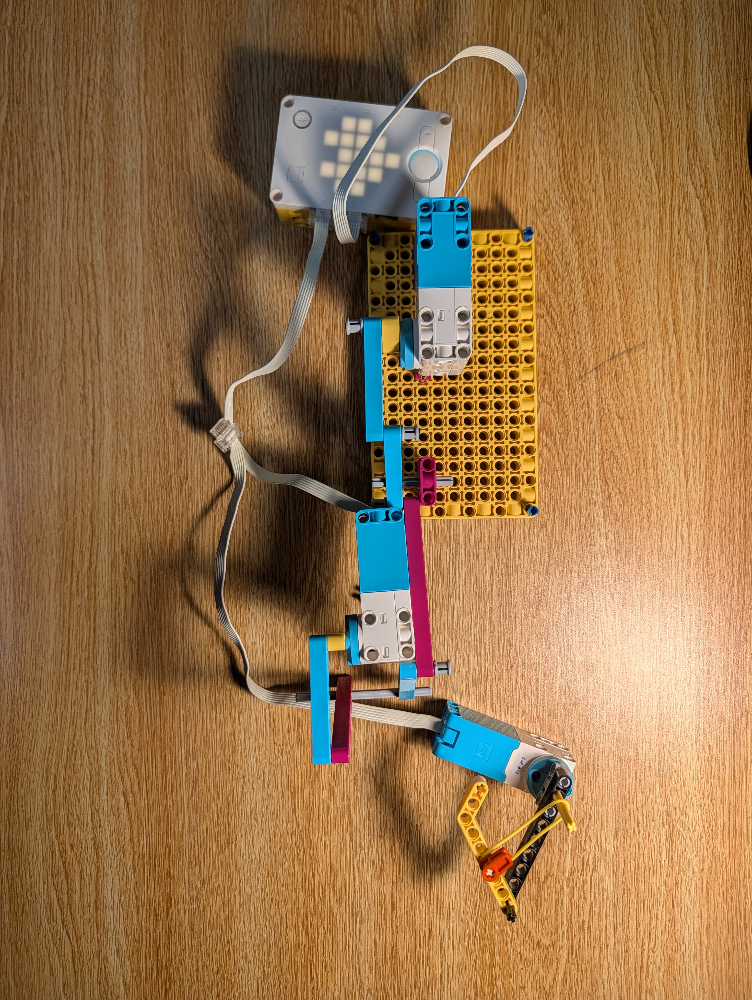

I was inspired by the way a praying mantis moves its arm and snaps its limbs to capture prey. I tried to recreate that snapping movement and limb motion in LEGO by using the rotational motion of a large motor and translating it into linear motion, working in tandem with a smaller motor. This project helped me explore how a biological movement can be translated into a mechanical structure.